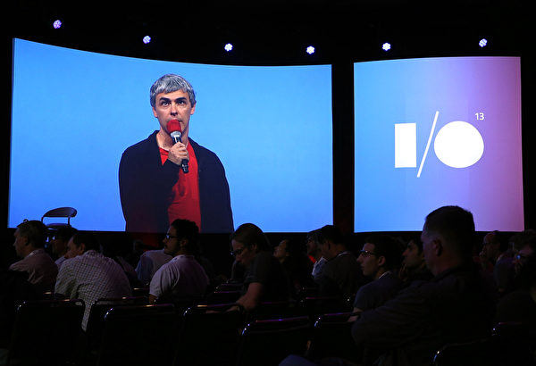

Top 1 史丹福大學 ↓

史丹福大學是美國最大的校園之一，主校區占地面積約8,180英畝，因為位在Palo Alto旁，所以是加州矽谷的心臟地帶，目前約共有15,658位學生。史丹福大學成立於1885年，位於舊金山以南不到一小時的車程，以創業精神聞名，而這樣的精神根源於第二次世界大戰後。校友中共有21位諾貝爾獎獲獎者，以商業、政治、媒體、體育和科技為主要重點領域，目前史丹福大學也是美國國會議員主要生產商之一，特別是由史丹福校友所創建的所有公司年收入超過2兆7千億美元，約是世界第十大經濟體，這些公司包括Nike、Yahoo、Snapchat、Netflix等。史丹福大學的座右銘是一句德文“Die Luft der Freiheit weht”，意思是自由之風之意。
(1) 七大學院：人文藝術、生命科學、工程科技、物理科學、社會科學、電腦科學、商學。
(2) 商學研究所介紹：史丹福商學研究所建於1925年，目前約有904位研究生，在2016年《全美最佳研究所排名》中，史丹福商學院在最佳商學院排行奪冠。史丹福商學研究所的使命是：鑽研拓展工商管理理論，培養敢於創新、堅持原則、善於洞察的改造世界的領袖。改造世界。學院年度預算約1.1億美元，捐贈基金超過7.5億美元，是全美第二最具經濟實力的商學院，人均金額大致與哈佛商學院相同。
(1) 學費：
每年平均每學期學費 $44,757美金，每學年宿舍費 $13,631,美金。
畢業十年後年薪平均約為 $83,400美金。
史丹福大學商學研究所碩士一年學費約 $66,540美金，總額約花費 $109,218美金 (含生活費)。
(2) 錄取標準：
史丹福大學商學研究所的MBA專案不設最低GMAT分數要求，但是GMAT成績在700分以上為佳，也接受GRE成績，GRE與GMAT成績效力相同。
史丹福大學商學研究所不對TOEFL iBT成績做要求，但基本上總分仍要在100分以上。
(1) Google共同創辦人 Larry Page，就讀於史丹福大學計算機學系，1998年從學校輟學成立Google。

(2) PayPal共同創始人Peter A. Thiel，1992年畢業於史丹福大學法學院。
(3) Yahoo執行長 Marissa Mayer，1999年於史丹福大學計算機研究所畢業。